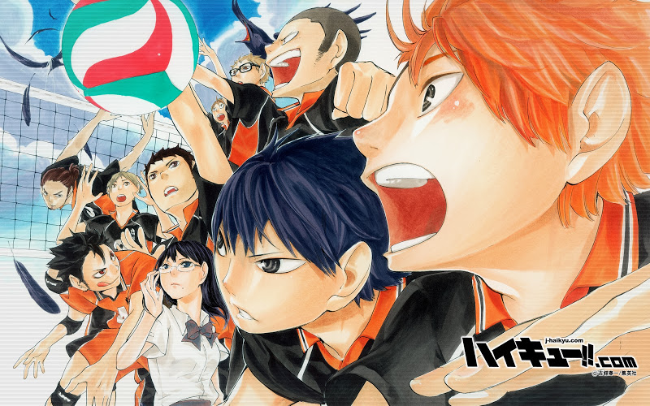

HTML 복습 겸 내가 좋아하는 만화 하이큐에 대해 소개하는 페이지
일본의 배구 만화.
주간 소년 점프에서 2012년 3월 5일부터 2020년 7월 20일까지 약 8년 반동안 연재되었다.
작가는 후루다테 하루이치.
역대 소년 점프 스포츠 만화 중 누계 부수 4위에 랭크된 초 히트작이다.
제목의 뜻은 배구(排球)의 일본어 독음. 영어로는 'Haikyu-!!'라고 표기한다. 약칭으로 HQ 혹은 819로 표기하기도 한다.